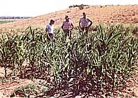

The pioneering work of a dedicated group of biodynamic/French-intensive horticulturists promises to help improve the productivity and weal of family farmers everywhere.
Thomas Jefferson, bless his idealistic soul, is probably churning in his grave over the present plight of family farming in America. It was Jefferson's dream, you know, that America become a country of independent "freeholders"-self-supporting, landowning folk like family farmers. Well, we almost made it, way back before the industrial revolution and the advent of modern agricultural machinery, chemical fertilizers, and large-scale corporate farming.
Many, if not most, Americans-and certainly we here at THE Mother Earth News-would like nothing better than to see the 20thcentury trend toward large-scale, absentee-wned farms reversed; we'd like to see the independent, owner-operator farmers of America (who, by and large, make far better stewards of the land than do faceless corporations) come once again to the fore.
But before that can happen-before better can win out over bigger-America's small-scale farmers are going to have to learn to do more with less . . . specifically, to grow more and better crops on less land, using less (and less expensive) equipment to do it.
Well, out on the semiarid plains of eastern Colorado, a small group of dedicated horticulturists is working to do just that produce more food on less land, employing more human labor and less nonorganic fertilizers and high-dollar equipment. The group calls itself the Deep Bed Farming Society (DBFS), and its plan is to adapt the phenomenally efficient techniques of biodynamic/French-intensive gardening to the larger-scale needs of independent farmers-especially the grain and legume growers of the Midwest.
According to DBFS president Steve White-hill, the group's three specific goals are [1] to promote, encourage, and support small, family-run farming operations; [2] to protect the ecological integrity of rural areas; and [3] to help assure that worldwide there would be sufficient quantities of locally produced food.
And how does DBFS hope to achieve these goals? Quite simply, by developing ways to make small-scale, organic farming not just solvent, but lucrative. This, they hope-through the workings of supply and demand-will draw more people (and the right sort of people) back onto America's farmlands as owner-operators (Jefersonian freeholders).
To date, DBFS members have conducted extensive comparative studies using test plots consisting of experimental biodynamic deep beds planted alongside conventional rows of corn, soybeans, and milo. The results indicate that DBFS is onto something good, with peracre deep-bed yields doubling and occasionally even quadrupling those of the neighboring conventional rows.
We'll try to keep you posted on the organization's progress (they'll soon be setting up a working model of an organic deep-bed farm somewhere in the Midwest). But for now, if you'd like to get more information on this group of doers, write to the Deep Bed Farming Society, 939 6th St., Las Animas, CO 81054. (As a nonprofit organization, DBFS depends on contributions and member support to survive, and welcomes queries from prospective members or donors.)
EDITOR'S NOTE: For a report on another "organic alternative" designed to alleviate the crisis facing America's family farmers, turn back to the Plowboy Interview on page 16.
|
 |
|
|